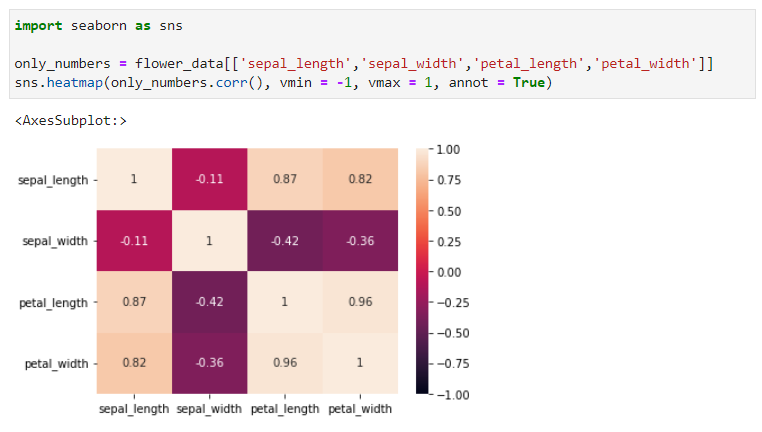
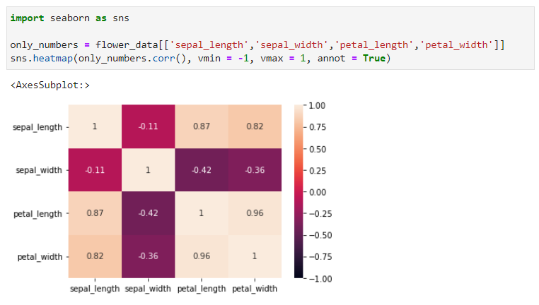
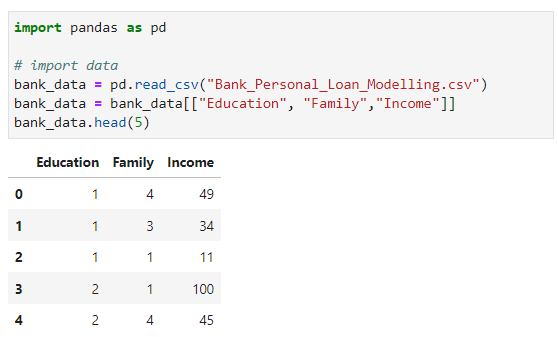
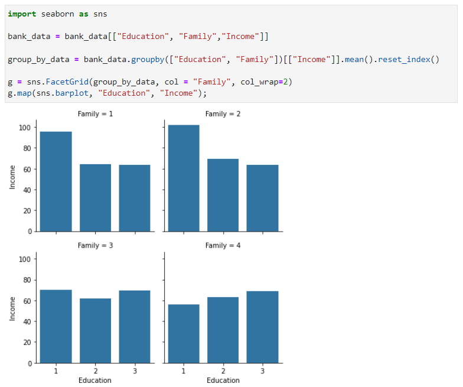

Visualizations Advanced
For each of the following visualizations, all of the code and datasets can be found here:
US Map Heatmap
A heatmap contains values representing various shades of the same color for each value to be plotted. Usually the darker shades of the chart represent higher values than the lighter shade. Note that the data must be quantitative. Below is an example of a heat map of the United States using the following data set & code:
Correlation Heatmap
A correlation heatmap is a graphical tool that displays the correlation between multiple variables as a color-coded matrix. It's like a color chart. that shows us how closely related different variables are. Note that all of the columns of the data must be quantitative. Below is an example of a correlation heat map using the following data set & code:
 

Facet Graph
Facet plots, also known as trellis plots or small multiples, are figures made up of multiple subplots which have the same set of axes, where each subplot shows a subset of the data. Note that a facet graph can represent bar graphs, scatterplots, histograms, etc. but for this example, I am showing a facet graph of bar graphs. Below is an example of a facet graph of bar graphs using the following data set & code:
 Word Cloud
Wordcloud is basically a visualization technique to represent the frequency of words in a text where the size of the word represents its frequency. Note that the data must consist of words. Below is an example of a word cloud using the following data set & code: